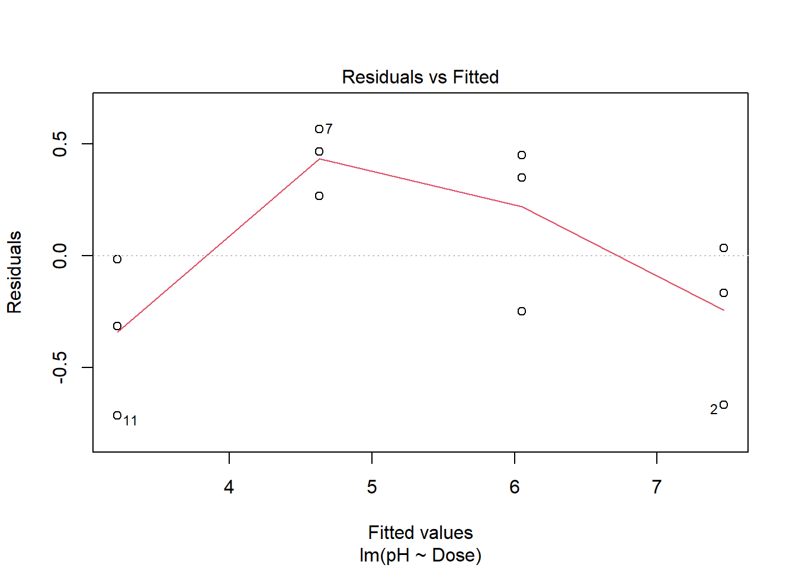

10 Análise de Regressão
10.1 Ajuste da reta
10.1.1 Ajuste do modelo linear no R
A função lm é usada para ajustar modelos estatisticamente lineares (lm = linear model). Na sintaxe do R, a fórmula pH ~ Dose representa o ajuste de uma reta de tendência, expressa por
\[ pH = \beta_0 + \beta_1 \times Dose \]
mod_reta <- lm( pH ~ Dose, data = dados )
coef( mod_reta )## (Intercept) Dose
## 7.4666667 -0.1416667Para ajustar a reta de tendência, torna-se necessário calcular os valores mais plausíveis para os parâmetros \(\beta_0\) e \(\beta_1\), com base nos dados. As estimativas de \(\beta_0\) e \(\beta_1\) são obtidas a partir do comando coef.
10.1.2 Diagnóstico do ajuste da reta
Ao realizar o diagnóstico de um ajuste linear clássico a partir dos gráficos dos resíduos, esperamos validar os pressupostos do modelo. Os resíduos devem aparentar ser aleatórios, sem padrões discerníveis, indicando homocedasticidade, e devem ser aproximadamente normalmente distribuídos em torno de zero, validando a suposição de normalidade e a independência dos erros, essencial para inferências subsequentes.- Análise dos resíduos do ajuste
plot( mod_reta, 1) # valores ajustados x resíduos
library(car)
qqPlot( residuals( mod_reta ) ) # gráfico quantil-quantil## [1] 11 210.1.3 Teste de falta de ajuste
Nesta etapa, realizaremos o teste de falta de ajuste para averiguar se o modelo é suficiente para capturar o comportamento dos dados ou se um modelo mais “flexível” deveria ser utilizado.mod_quali <- lm( pH ~ Tratamentos, data = dados) # ajuste do modelo qualitativo
# Falta de ajuste
anova( mod_reta, mod_quali )## Analysis of Variance Table
##
## Model 1: pH ~ Dose
## Model 2: pH ~ Tratamentos
## Res.Df RSS Df Sum of Sq F Pr(>F)
## 1 10 2.085
## 2 8 0.840 2 1.245 5.9286 0.02634 *
## ---
## Signif. codes: 0 '***' 0.001 '**' 0.01 '*' 0.05 '.' 0.1 ' ' 110.1.4 Ajuste do modelo de segundo grau
Com a inserção do termo I(Dose, 2) na fórmula, a expressão da curva de tendência passa a ser
\[ pH = \beta_0 + \beta_1 \times Dose + \beta_2 \times Dose^2 \]
ou seja, uma parábola. Observe que a curvatura exibida por uma parábola pode capturar o comportamento que não foi possível descrever com a reta.
mod_quad <- lm( pH ~ Dose + I(Dose^2), data = dados )
coef( mod_quad )## (Intercept) Dose I(Dose^2)
## 7.158333333 -0.049166667 -0.00308333310.1.5 Diagnóstico do ajuste da parábola
- Análise dos resíduos do ajuste
plot( mod_quad, 1) # valores ajustados x resíduoslibrary(car)
qqPlot( residuals( mod_quad ) ) # gráfico quantil-quantil## [1] 6 11shapiro.test( residuals( mod_quad ) )##
## Shapiro-Wilk normality test
##
## data: residuals(mod_quad)
## W = 0.89411, p-value = 0.133210.1.6 Teste de falta de ajuste para a parábola
# Falta de ajuste
anova( mod_quad, mod_quali )## Analysis of Variance Table
##
## Model 1: pH ~ Dose + I(Dose^2)
## Model 2: pH ~ Tratamentos
## Res.Df RSS Df Sum of Sq F Pr(>F)
## 1 9 0.94417
## 2 8 0.84000 1 0.10417 0.9921 0.348410.1.7 Comparação de modelos
O Critério de Informação de Akaike (AIC) é fundamentado na teoria da informação, proporcionando uma medida relativa da informação perdida quando um determinado modelo é usado para representar o processo gerador dos dados. Ele avalia a adequação do modelo, considerando tanto a complexidade do modelo quanto o ajuste aos dados. O AIC é calculado como \(AIC = 2k - 2\ln(L)\), onde \(k\) é o número de parâmetros no modelo, e \(L\) é a verossimilhança do modelo. Menores valores de AIC indicam um melhor equilíbrio entre ajuste do modelo e complexidade, permitindo comparar modelos diferentes, mesmo não aninhados, proporcionando uma abordagem robusta para a seleção de modelos na análise estatística. O coeficiente de determinação (R²), por outro lado, apenas mede a proporção da variância explicada pelo modelo, não penalizando a complexidade, podendo levar à preferência por modelos superajustados (overfitting) que performam mal com dados novos. Portanto, o AIC é frequentemente mais adequado para a seleção de modelos quando se compara um conjunto de modelos.AIC(mod_quali , mod_reta, mod_quad )## df AIC
## mod_quali 5 12.14340
## mod_reta 3 19.05287
## mod_quad 4 11.54621